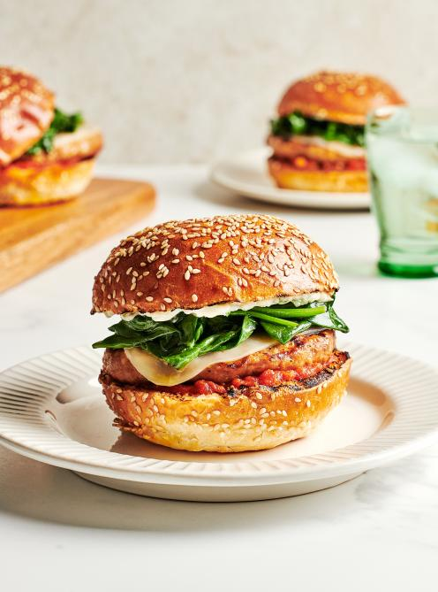

Beef Burgers with Onion Jam

Description
Onion jam in the meat patties, and again in the filling?
It doubles the fun. The cabbage, awakened by a little red wine
vinegar, brings crunch and color thanks to its vibrant purple.
We favor a cheese with a washed rind since it melts well in the heat.
Ingredients
- 1 lb (450 g) lean ground beef
- 1 egg
- 2 tbsp (30 ml) onion jam
- ½ tsp ground coriander seeds
- 1 cup (85 g) red cabbage, thinly sliced
- 2 tbsp (30 ml) red wine vinegar
- 4 slices washed-rind cheese (such as Oka)
- 4 hamburger buns
- Dijon mustard, to taste>
- Mayonnaise, to taste
- 1 cup (25 g) arugula
- ¼ cup (60 ml) onion jam
Steps
- In a bowl, combine the meat, egg, onion jam and coriander.
Season with salt and pepper. With your hands, form the mixture into 4 patties.
Place on a plate and brush with oil. Refrigerate.
- Preheat the grill, setting the burners to high. Oil the grate.
- In a bowl, combine the red cabbage and vinegar. Season with salt and pepper.
Let sit for 10 minutes. Drain.
- Meanwhile, grill the patties for 4 minutes on each side or until cooked through.
Place the cheese on the patties and cook until it’s starting to melt.
Grill the inside of the hamburger buns.
- Spread mustard and mayonnaise over the inside of the buns.
Divide the arugula and patties among the bun bottoms. Top with the onion jam and cabbage.
Close with a bun top.